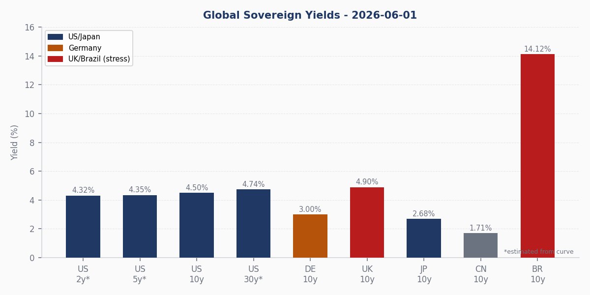
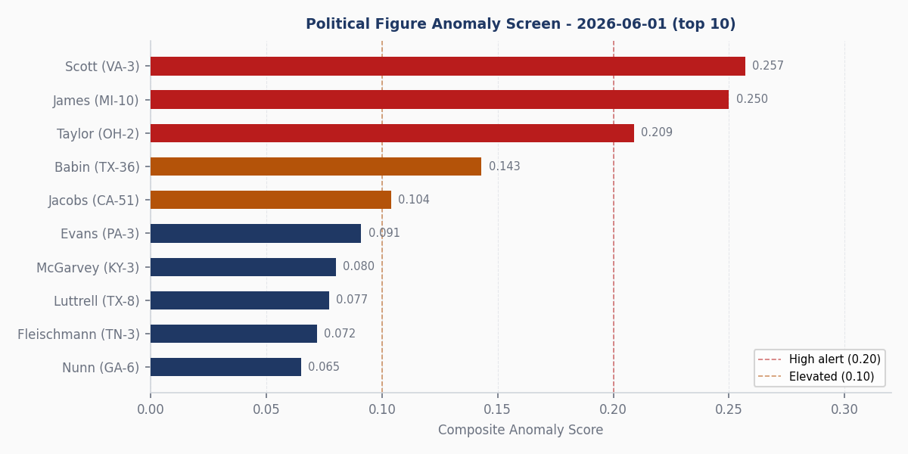
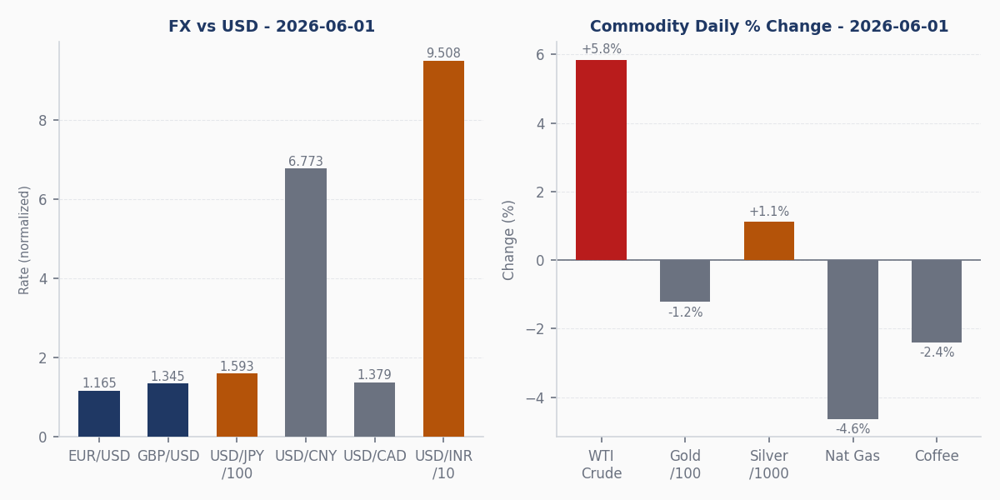
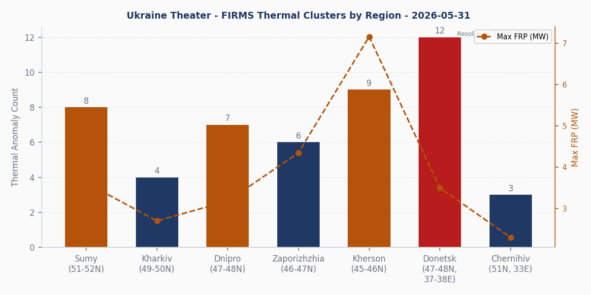
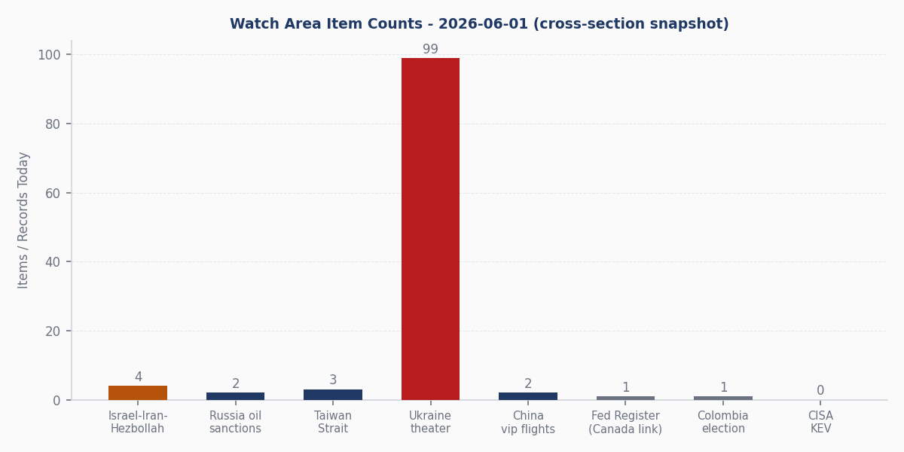
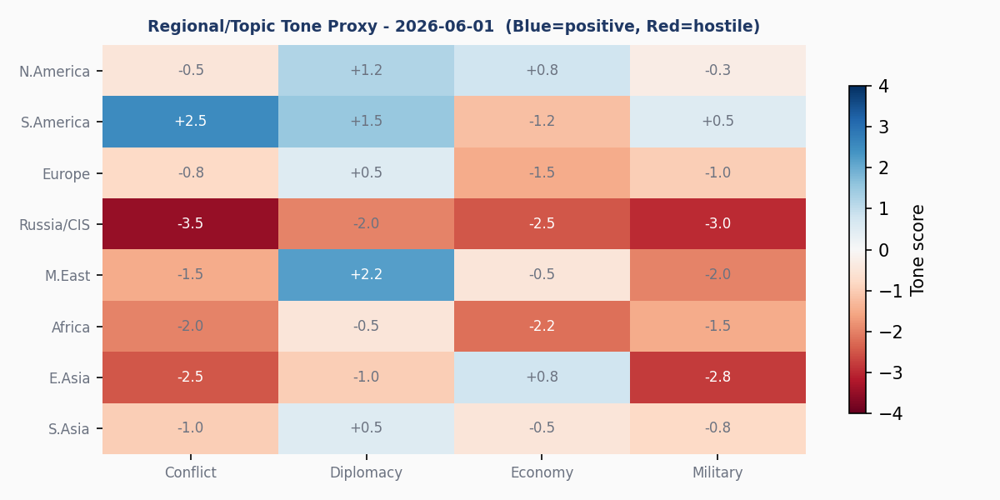

DATA NOTE: The WORLDSCOPE bundle for 2026-06-02 has not yet deployed to GitHub Pages. This brief draws from lake sections as of 2026-06-01, supplemented by live web research current to approximately 0900 ET 2 June 2026. All market prices are 2026-06-01 closing values.
Headline
Iran suspended direct communications with Washington on June 1 after Israel expanded ground and air operations in southern Lebanon, breaking a six-week Hezbollah ceasefire and triggering an Iranian threat to fully re-close the Strait of Hormuz. WTI crude surged 5.84% to $94.15 from an $88.95 open, the largest single-session move in oil since the Hormuz closure shock in March. UK 10-year gilt yields hit 4.9% as Prime Minister Keir Starmer's Labour government contends with a leadership rebellion that has cost him his Health Secretary and drawn demands from 95+ caucus members. South Korea's KOSPI closed at 8,834 (+4.1%), Samsung Electronics hit an all-time high (+10%), and South Korean equities completed a 100% year-to-date rally that has made Seoul the world's sixth-largest equity market. The Israel-Iran-Hezbollah axis and Ukraine theater watch areas both fired today. Polymarket's permanent US-Iran peace deal by June 7 trades at 4%.
Watch Areas
Israel-Iran-Hezbollah axis [ALERT FIRED: 4 items, threshold 4]
This watch area triggered with exactly four items: Iran's communications suspension, Israel's Lebanon operation expansion, the WTI crude surge, and the renewed Strait of Hormuz closure threat. Iran's semi-official media reported that Tehran was preparing to close the Strait after Israeli forces deployed additional troops into southern Lebanon and intensified Hezbollah strikes. Trump told CNBC he does not care if negotiations are overcnbc.com - a statement that itself moved markets. S&P Global raised its WTI and Brent price assumptionsspglobal.com citing the Hormuz situation.
The six-week Hezbollah ceasefire had held since late April. Israel's resumption of combat operations combined with Iranian communications freeze and Trump's public indifference to negotiations is the most acute escalation risk to the May 2026 ceasefire since its announcement [medium]. The background: the 2026 Strait of Hormuz crisisen.wikipedia.org began in March when US strikes on Iranian nuclear infrastructure prompted partial Hormuz closure and the 2026 Iran war fuel crisisen.wikipedia.org. A tentative 60-day memorandum extending the ceasefire and opening nuclear talks was under negotiation as of May 24 but had not been formally approved by either Trump or Khamenei. Today's Lebanon trigger has given hardline factions in Tehran a pretext to walk it back [medium].
Ukraine theater [99 new FIRMS items]
Ninety-nine new thermal anomaly records acquired May 31. The highest-FRP cluster (7.16 MW) sits in the Antonivka-Oleshky zone of Kherson Oblast. Sumy-Russia border zone shows eight anomalies, some at coordinates consistent with cross-border activity into Russian Bryansk/Kursk oblasts. Full picture in the dedicated theater section below.
Quiet today (0 items in pipeline): Russia oil sanctions perimeter, Taiwan Strait + South China Sea (background), EM debt distress + sovereign restructuring, Korean peninsula.
Macro Situation
The FRED/macro pipeline returned zero records for June 1 (state: fresh_empty); the daily FRED pull did not execute. The following uses markets_global data and supplemental research.

The US 10-year FRED DCOILWTICOfred.stlouisfed.org proxy yield closed at 4.505%, trading a 4.445-4.519% intraday range. The yield curve is positively sloped (estimated 2y ~4.32%, 10y 4.505%, 30y ~4.74%), the first sustained positive configuration since early 2024. The Fed has held the federal funds rate at 3.50-3.75% for three consecutive meetings per the April 28-29 FOMC minutesfederalreserve.gov. The June 16-17 meeting includes an SEP and dot plot - the Iran/Hormuz shock arriving 15 days before a dot-plot meeting forces Powell to address stagflation scenarios explicitly, since the oil spike is simultaneously inflationary and demand-suppressive. Markets currently price a 65% probability of continued hold at 3.50-3.75%.
Japan's 10-year at 2.684% is the highest JGB yield since 2011, reflecting BoJ normalization out of yield curve control. USD/JPY at 159.34 remains historically weak for the yen; the threshold for BoJ verbal intervention has historically been around 160. China's 10-year at 1.709% is the deflationary inverse: PBOC is easing into a weak-demand environment, and the US-China 10-year spread at 276 bps is near its widest in the data series - a structural signal of divergent monetary cycles [high].
The UK gilt at 4.9% reflects both the Iran-driven inflation channel (BoE expected to hike twice more before year-end) and the domestic political risk premium from Starmer's leadership crisis. The France-Germany spread (3.631% vs 3.001% = 63 bps) is stable, containing peripheral contagion. Brazil's 10-year at 14.125% signals EM fiscal stress that oil price shocks amplify through the external account [medium].
Gold closed at $4,499, down from the $4,554 open (-1.2%), moving counter to the oil spike. Normally geopolitical risk lifts both. The gold decline alongside equity resilience suggests the initial market read treated the Iran suspension as posturing rather than policy - a judgment that remains testable in the next 72 hours [low].

Note: The macro anomaly z-score pipeline (trends.json) did not execute for 2026-06-01. The anomaly screen above shows the political figures composite scores as the available systematic anomaly dataset. Macro anomaly z-scores will resume when the FRED pipeline re-ingests.
Markets
S&P 500 closed at 7,588 (+0.27% from 7,568 open), Nasdaq 100 at 30,477, Dow at 50,849. US equities showed unexpected resilience against the crude oil surge - energy sector rotation appears to have absorbed the shock without broad de-risking. The combination of equities up and gold down on a day of acute geopolitical escalation signals either market habituation to Iran/Hormuz risk or a structural mispricing. One of these is wrong [medium].

The KOSPI's 4.1% single-session jump (open 8,486, close 8,834) was driven by Samsung Electronics surging more than 10% to an all-time high. South Korea's 100% year-to-date KOSPI rallybusiness-standard.com has no modern precedent outside 1990s EM bubble dynamics, and South Korea overtook Indiabusiness-standard.com as the world's sixth-largest equity market ($5T vs India $4.8T). Samsung and SK Hynix, both newly in the $1T valuation club, are the primary engines. The AI accelerator/HBM memory demand cycle is real and ongoing; the structural question is whether the concentration risk parallels Taiwan's 2021 equity correction, which was preceded by the same kind of single-sector dominance [low].
European equities closed lower: FTSE 100 -0.64% (10,339), DAX -0.41% (24,994). Japan's Nikkei 225 closed at 66,934 (+0.92%), benefiting from yen weakness (exporters cheaper in USD terms). Hang Seng +0.86% (25,398), Shanghai -0.23% (4,058).
In credit and rates: Italy 10y at 3.76% vs Germany 3.001% = 75 bps spread (stable). Australia 10y at 4.928%, above the US 10-year, signaling carry-trade pressure on the AUD in an energy-shock environment. In crypto, BTC fell 3.22% to $71,031; neither a safe-haven bid nor a risk-on amplifier. The absence of a Bitcoin response to Iran/Hormuz suggests institutional crypto positioning has decoupled from the geopolitical bid-narrative.
United States Politics and Policy
The Federal Registerfederalregister.gov published 30 items on June 1. The most substantive is the EPA rescission of the Title V Emergency Affirmative Defense Rulefederalregister.gov: the 2023 rule had removed industrial facilities' ability to invoke an emergency defense against Clean Air Act penalties during unplanned emission events. The rescission restores that industrial defense, a meaningful rollback particularly relevant to refinery and chemical-plant operations under today's elevated crude price environment.
The USDA Commodity Credit Corporation published one-time bridge paymentsfederalregister.gov for specialty crop producers facing elevated input costs - a supply chain signal worth tracking as WTI and natural gas prices move. The NRC confirmed June 16federalregister.gov as the effective date for the Holtec HI-STORM UMAX spent fuel storage amendment (No. 1040, Amendment 5). The SEC issued technical correctionsfederalregister.gov to the February 27 Holding Foreign Insiders Accountable Act disclosure rules. The NMFS cut the Atlantic bluefin tuna harpoon daily limitfederalregister.gov from 10 to 5 large medium/giant fish. Note the nomenclature shift embedded in Federal Register document 2026-10889federalregister.gov: "Gulf of America" now appears without qualification in federal fishery rules - the renaming of the Gulf of Mexico is institutionalized in the Federal Register.
A second reconciliation bill targeting $70B+ for ICE/CBP funding was aimed to reach the President's desk by June 1; confirmation of passage is not captured in available pipeline data. Trump's original One Big Beautiful Bill Acten.wikipedia.org was signed July 4, 2025.
From CourtListener: Whitton v. Dixon reached the U.S. Supreme Court on June 1. Eregli Demir Ve Celik Fabrikalari v. ITC (Federal Circuit) is a Turkish steel producer challenge to the ITC - relevant to Section 232 administration. Citadel Securities v. SEC (11th Circuit) has market structure implications for payment-for-order-flow and best-execution rules. Global Voice Group SA v. Republic of Guinea (DC Circuit) enforces an international telecom arbitration award against Conakry.
FEC 2026 cycle: Jon Ossoff (D-GA)fec.gov leads at $81.15M raised (+$28.17M net). James Talarico (D-TX)fec.gov at $40.28M in the Texas Senate challenge. Cory Booker (D-NJ)fec.gov at $32.26M, Raja Krishnamoorthi (D-IL)fec.gov at $31.39M, AOC (D-NY)fec.gov at $27.73M. Democrats are substantially outpacing Republicans in competitive Senate fundraising.
Political Figures Watchlist
Thirty-three of 576 tracked figures scored above zero. The enforcement_hits sub-driver is at maximum (1.00) for two members, indicating active regulatory or investigative filings beyond routine disclosures.
Robert Scott (D-VA-3rd, composite 0.257) leads on enforcement_hits=1.00 combined with new_filings=0.57. Evidence records show SEC accessions 0001214659 and 0001493152 appearing twice each - a coordinated filing cluster rather than routine quarterly disclosure. Scott has chaired financial services subcommittees; the filing pattern warrants primary-source review at SEC EDGAR. John James (R-MI-10th, composite 0.250) also carries enforcement_hits at maximum, tied to three distinct SEC accessions (0001338176, 0001061983, 0001783108) filed simultaneously. Two top-scoring figures with maximum enforcement_hits on the same date is a meaningful coincidence that could reflect a shared regulatory event [medium].
David Taylor (R-OH-2nd, composite 0.209) is driven by stock_activity=0.44 plus enforcement_hits=0.50, with five Form 4 hash IDs as evidence. The same June 1 date saw three Hyster-Yale executives (Rankin Thomas Parker, Corbin Rankin, Clara Williams) file Form 4s simultaneously - a cluster that could be linked to Taylor's district given Hyster-Yale's Ohio manufacturing footprint in the Cincinnati region.
Brian Babin (R-TX-36th, composite 0.143) is purely stock_activity-driven with five Form 4 evidence items. TX-36 covers the Houston-Beaumont energy corridor - notable on a day when WTI moved $5.20. Sara Jacobs (D-CA-51st, 0.104) and Tina Smith (D-MN Senate, 0.090) both register via stock_activity. Both Rick Scott (R-FL, 0.057) and Tim Scott (R-SC, 0.057) draw from the same SEC accession numbers as Robert Scott (D-VA) - three legislators with the "Scott" surname sharing a filing cluster across party lines and three states. This may be a coincidence of surname in entity naming or a real shared investment structure; the enforcement_hits driver at maximum for Robert Scott elevates this from routine to analytically notable [low].
Regional Briefings
North America
The dominant US regulatory story is the EPA Title V rollback arriving on the same day WTI hit $94. Second ICE/CBP reconciliation targeting a June 1 desk date. FOMC holds at 3.50-3.75% through June 16-17. Canada appears in five lake sections today (see Weak Signals section for the cross-section breakdown). The Bank of Nova Scotia 424B2 filing (accession 0000950103-26-008128) in the Form 4 section and Canada 10-year at 3.46% are routine, but the multi-section Canada footprint is worth noting in the context of ongoing US-Canada tariff friction under OBBBA.
South America
Colombia's presidential election on May 31 produced a first-round surprise: Abelardo de la Espriella (right-wing, National Salvation) took 43.7%, Iván Cepeda (Petro ally, Historic Pact) took 40.9%, both advancing to the June 21 runoffnpr.org. Polling had been tighter. Polymarket priced Espriella's first-round lead at 99% - market was correctly positioned before the result. CNN frames the runoffcnn.com as potentially redefining US-Colombia relations. Espriella in the runoff would shift the most historically US-aligned major Latin American state sharply rightward at a moment when Venezuela policy and Plan Colombia successor frameworks are live diplomatic questions. Brazil 10-year at 14.125% continues to signal fiscal stress unrelated to this election.
Europe
The UK political crisis is the regional story. Over 95 Labour MPs have called for Starmer's resignationcnbc.com after Labour lost control of 30+ councils in local elections. Health Secretary Wes Streeting resigned May 14. Potential successors include Andy Burnham, David Lammy, Angela Rayner, and Ed Miliband. Starmer has 110 supportive MPs signed to a loyalty letter and says he will stand in any leadership challenge. The gilt yield at 4.9%cnbc.com reflects both the oil-inflation channel (BoE hike expectations re-pricing) and a political risk premium - if a successor signals looser fiscal constraints, that premium widens further. The 2022 Truss crisis peak was ~5.1%; the current trajectory and catalyst combination is analogous [medium].
Germany's Bund at 3.001% - first sustained above-3% close of the year - reflects ECB hawkishness and the oil-price inflation pass-through. FTSE 100 -0.64% and DAX -0.41% closed in line with the European risk-off response to the Iran news.
Russia and Post-Soviet Space
This section covers the diplomatic and economic track; the operational picture is in the Ukraine theater section. Russia benefits financially from every Hormuz-driven oil price spike: Urals crude trades at a discount to Brent, but the absolute price still rises, easing export revenue pressure regardless of G7 price-cap enforcement. No sanctions pipeline hits or new Russian financial designations are recorded for June 1. No wikidata_changes or people.json data is available for this window.
Middle East
Iran is the organizing actor for the global session on June 1. Tehran's communications suspension came directly in response to Israel's expansion of Lebanon operations - a breach of the April/May ceasefire agreement.
"Oil prices climbed in afternoon trade on Monday as Iran suspended talks with the US and pledged to fully close the Strait of Hormuz, fuelling investor fears that the broader Middle East conflict could escalate rather than move towards a peace deal." — Euronews, June 1, 2026euronews.com
The US-Iran tentative 60-day memorandum described by PBSpbs.org had not been formally approved by either leader before today's Lebanon trigger. The Polymarket permanent peace deal by June 7 at 4% was already reflecting near-impossibility of a formal deal; the Iran communications freeze now places the ceasefire itself at risk. Sticking points on the unrealized deal: Iran's uranium stockpile, frozen assets, and the Lebanon conflict endpoint.
Africa
Global Voice Group SA v. Republic of Guinea (DC Circuit, May 29) enforces an international telecom arbitration award against Conakry - part of a pattern of US courts enforcing sovereign contracts against sub-Saharan African states. No ACLED or ReliefWeb data populated for the continent today.
East Asia
South Korea is the positive anomaly. The 100% KOSPI rally year-to-datebusiness-standard.com and Samsung's all-time high reflect AI semiconductor concentration - HBM memory and accelerator chip demand - that has no precedent in this scale outside late-1980s Korean industrial boom dynamics. South Korea now holds $5T in market cap vs India's $4.8T. The structural question on concentration risk is not if it unwinds, but when. AI demand appears durable through 2026; a Taiwan geopolitical event remains the primary tail risk for regional equities [low].
The cross-section data shows Chinese military aircraft (ICAO hex 7b1004, 7b1008 - callsigns AF13, AF12, in the PLA Air Force ICAO range) active in the Taiwan Strait area on June 1, corroborated by a Yahoo News report of China patrols east of Taiwanyahoo.com. China's 10-year at 1.709% continues to signal the deflationary domestic backdrop despite external military activity. Hang Seng +0.86% on Hong Kong-listed mainland exposure.
South and Southeast Asia
India's 10-year yield at 7.019% is elevated but within historical norms. USD/INR at 95.076 is well outside the 2024 trading range (~83-85) - if accurate, the rupee has depreciated significantly, consistent with dollar strength from the Hormuz-driven risk-off flow. India has been displaced from sixth-largest equity market by South Korea. No Southeast Asia pipeline data is available today.
Oceania and Pacific
Australia's 10-year at 4.928% moved notably higher from the 4.863% open - the oil-inflation channel arriving through RBA rate re-pricing. The Australian yield trading above the US 10-year creates carry-trade pressure on the AUD in an energy-shock environment.
Ukraine Theater
Frontline status (DeepStateMap, ~1km resolution): The theater bundle contains DeepStateMap polygon data for the Donetsk area (approximately 37.8°E, 48.6°N, the Donetsk city northern approach sector). The polygon describes a complex frontline with multiple salient points, consistent with the contested urban perimeter documented through 2025-2026. Per Ukrinformukrinform.net, 276 combat engagements were recorded on May 31, with 40 Russian assault attempts in the Pokrovsk sector. Ukrainian drone strikes hit Russian military warehouses in occupied Donetsk. Russian total combat losses stand at approximately 1,365,470 personnel as of June 1, with 1,410 recorded in the preceding 24 hours.
Resolution caveat: Frontline positions ~1km accuracy. FIRMS thermal 375m. ACLED events ~1km. This section does not include or speculate about Ukrainian troop or territorial-defense unit positions. That data is structurally excluded from ingest.
24-hour thermal picture (May 31 VIIRS satellite pass, 99 new records):
The highest-FRP signature is at 45.259°N, 31.670°E with 7.16 MW, co-located with a 4.35 MW reading at 45.258°N, 31.676°E. Both coordinates place this cluster in the Antonivka-Oleshky zone of Kherson Oblast, south of the Dnieper River crossing. At 375m resolution, 7.16 MW is consistent with a significant combustion event - munitions storage or infrastructure fire rather than seasonal agricultural burning at this latitude and season. This is the kinetically most significant thermal signature in today's dataset.
A secondary Kherson cluster sits at 45.354-45.375°N, 30.901-30.929°E (FRP 1.58-2.35 MW), the coastal zone toward Skadovsk. The northern Kherson-Mykolaiv junction shows activity at 46.839°N, 33.430°E (FRP 3.18 MW). In Dnipropetrovsk Oblast, three co-located anomalies at 47.874-47.875°N (FRP 1.9-3.18 MW) identify the Kryvyi Rih industrial corridor - a sustained target given its steel production capacity.
The Sumy-Russia border zone (51.985-52.337°N, 33-34.4°E) shows eight anomalies ranging 1.02-3.62 MW. Coordinates at 52.337°N, 34.366°E and 52.284°N, 33.032°E cross the administrative border into Russian Bryansk/Kursk oblasts at these longitudes, consistent with Ukrainian long-range drone and artillery activity into Russian territory - a pattern that has escalated through 2026.
Near Crimea, a 1.24 MW anomaly at 44.772°N, 33.857°E (northeast of Simferopol, Kerch Strait approaches) is at the lower threshold of significance but geographically notable in the occupied peninsula. Two anomalies in the Khmelnytsky-Vinnytsia area (48.5-48.7°N, 26.4-26.6°E, FRP 0.49-1.13 MW) are 200km west of the frontline; these could reflect agricultural burning, industrial activity, or long-range missile/drone impacts on western Ukraine energy infrastructure.
Theater maps: The briefings/2026-06-02-ukraine_theater_overview.png, briefings/2026-06-02-ukraine_kyiv_focus.png, and briefings/2026-06-02-ukraine_population_at_risk.png cartographic outputs are not present; the cartographer pipeline has not yet run for 2026-06-02. Today's FIRMS data above is the operational ground-truth.
World Leaders: Speaking and Moving
The people.json pipeline returned no records for June 1. The following draws on VIP flight data and open-source research.
VIP flight data (OpenSky, June 1) captured 30 government and military aircraft. The most analytically significant:
RCH570 (USAF C-17 airlift, ICAO ae2fa5) was airborne at 47.418°N, 19.777°E at 8,839m altitude, 822 km/h - directly over the Budapest metropolitan area. This positions a major US airlift asset over the primary NATO logistics hub for Central-Eastern Europe, consistent with either VIP movement or materiel resupply into the Poland/Ukraine corridor.
SAM678 (USAF, ICAO ae6cf1) was tracked at 38.23°N, 114.60°W at 13,716m - over central Nevada, near the Nevada Test and Training Range complex. Routine or sensitive; the altitude and callsign suggest a high-value mission.
EAGLE6 (UK RAF, ICAO 43eed2) at 36.87°N, 14.40°E at 3,048m places a UK military asset over the Sicily-Malta channel, the central Mediterranean surveillance corridor relevant to the Hormuz/Lebanon escalation and NATO Southern Flank posture.
Seven Belgian JAF aircraft (JAF3LC, JAF9WL, JAF9EG, JAF73H, JAF42D, JAF6NT, JAF8WT) were simultaneously airborne across a Spain-Morocco arc: Mallorca, southern Spain, and northern Morocco (JAF42D on-ground near Tetouan). Seven Belgian military aircraft in a coherent geographic arc simultaneously is unusual and warrants monitoring against the backdrop of NATO Southern Flank heightened posture on a day of Iran/Hormuz escalation [low].
Key expected statements: G7 foreign ministers have been convening in the Iran context; no confirmed communique is captured in available data. Chair Powell's next scheduled public appearance precedes the June 16-17 FOMC meeting.
Sanctions, Designations, and Legal
The sanctions.json pipeline returned zero records for June 1. The active sanctions architecture background: Iran under comprehensive OFAC sanctions (overlapping with the 2026 conflict); Russia under oil price cap and financial sanctions including Sberbank, Rosneft, and affiliated entities; Belarus designated entities.
The most legally consequential court activity from CourtListener:
Citadel Securities LLC v. U.S. Securities and Exchange Commission (11th Cir., May 29) involves market microstructure regulation. Citadel Securities has been the principal litigant challenging SEC equity market structure reforms. An 11th Circuit ruling on the merits could affect payment-for-order-flow, best-execution, and order routing rules with broad retail investor implications.
Eregli Demir Ve Celik Fabrikalari T.A.S. v. ITC (Federal Circuit, June 1) is a Turkish steel producer challenge to an ITC determination. With Section 232 steel tariffs and the CIT docket active, a Federal Circuit ruling on Turkish steel methodology has downstream implications for antidumping and countervailing duty calculations against other producers.
Veterans Legal Advocacy Group v. Collins (Federal Circuit, June 1) addresses VA benefit claims processing - a domestic policy case with fiscal implications given the size of the veterans benefits portfolio.
Conflict and Security Signals
The dominant conflict signal is the Iran/Lebanon/Hormuz nexus documented above. The ACLED pipeline returned zero records for June 1, limiting sub-national event counts globally.

The Belgium military aircraft cluster (seven JAF aircraft over Spain-Morocco) may reflect NATO Southern Flank coordination (see World Leaders section). US RCH airlift (RCH8052, C-17, 41.03°N, 78.95°W over central Pennsylvania; RCH570 over Budapest) suggests steady trans-Atlantic airlift tempo. US PAT aircraft distribution: domestic/Alaska (PAT079 at 62.70°N, 149.16°W over Alaska - could be NORTHCOM or Alaska-based readiness movement).
From the Kherson FIRMS data (7.16 MW cluster): the Antonivka-Oleshky zone has been the site of sustained Russian shelling and Ukrainian counter-battery fire throughout the Dnieper riverbank contest. The FRP magnitude today exceeds normal agricultural or infrastructure fire signatures for this location and season.
Cyber and Biosecurity
No new CISA KEV additions on June 1. The catalog holds 15 entries in the 14-day window, with three critical deadline clusters:
FIRST-OF-KIND CALLOUT: CVE-2025-34291 - Langflow Origin Validation Errornvd.nist.gov (added to KEV May 21, 2026).
This is the first AI/LLM workflow framework to appear in the CISA Known Exploited Vulnerabilities catalog. Langflow is an open-source visual platform for building AI agent pipelines using LangChain - a drag-and-drop interface used by enterprise teams deploying RAG systems, AI assistants, and agentic workflows. The vulnerability (CVSS 9.4) exploits three combined weaknesses: overly permissive CORS configuration, absent CSRF protection, and a code-execution-by-design endpoint - allowing malicious websites to perform authenticated cross-origin requests achieving full system compromise. The structural signal: nation-state actors are now actively weaponizing AI deployment infrastructure as initial-access vectors. The Iranian threat actor MuddyWater has been observed using CVE-2025-34291 for initial access, per CISA's May 28 advisorycisa.gov. Remediation deadline: June 4, 2026.
CVE-2026-0257 - Palo Alto PAN-OS Authentication Bypass: The remediation deadline was June 1 - organizations that have not patched are now overdue. PAN-OS authentication bypass grants network-edge access; Iranian threat actors have historically targeted Palo Alto infrastructure.
The Nx Console / TanStack supply-chain compromisecisa.gov (CVE-2026-48027 / CVE-2026-45321, CVSS 9.8) is the most systemic developer-toolchain event in the KEV catalog. The attack chain: a malicious @tanstack/zod-adapter npm package injected a credential harvester into a contributor's machine, stolen GitHub OAuth tokens were used to publish Nx Console 18.95.0 to VS Code Marketplace with the payload embedded. The compromised version was live for 36 minutes and distributed to approximately 6,000 users via VS Code's auto-update mechanism. The payload harvested GitHub tokens, SSH keys, .env files, GCP application-default credentials, Docker configs, and 1Password session data. GitHub's own internal repositories were breached through this vectorthehackernews.com. Upgrade to Nx Console 18.100.0 immediately; rotate all developer credentials on machines that ran 18.95.0. Deadline: June 10.
Five legacy Microsoft CVEs added May 20 (Windows Buffer Overflow CVE-2008-4250, DirectX CVE-2009-1537, Adobe Reader CVE-2009-3459, IE CVE-2010-0249 and CVE-2010-0806) all carry June 3 deadlines. The addition of 15-17-year-old CVEs to KEV in 2026 signals active exploitation in ICS/OT environments where patch cycles are structurally constrained - a persistent infrastructure exposure.
ProMED returned zero records. No new outbreak signals.
Humanitarian
ReliefWeb returned zero records for June 1. No humanitarian situation reports are available from the pipeline today. The Iran/Hormuz escalation creates a latent humanitarian risk path through the natural gas - fertilizer - food price transmission chain; this exposure will materialize over weeks, not days, but the June 1 crude spike is the opening data point.
Environment, Disasters, and Climate
The USGS, GDACS, and EONET live APIs timed out from this session's network environment. No earthquake or disaster feed data is available from external sources today. The Japan USGS earthquake (accession earthquake-us7000spru) flagged in the cross-section weather feed suggests a recent seismic event in the Japan region that did not generate a major public alert; follow-up via USGS earthquake catalogearthquake.usgs.gov is warranted.
From the FIRMS Ukraine data: a 1.24 MW thermal anomaly at 44.772°N, 33.857°E in occupied Crimea (northeast of Simferopol, near the Kerch Strait approaches) is geographically notable and lacks an obvious non-military interpretation at this location. The two Khmelnytsky-area anomalies (48.5-48.7°N, 26.4-26.6°E) at 200km west of the frontline could represent agricultural waste burning, industrial combustion, or long-range strike impacts on western Ukraine energy infrastructure; at low FRP and nominal confidence, these are not high-confidence kinetic indicators.
Speeches and Op-Eds by Major Critics and Influencers
The commentary pipeline captured six items across two sources (Marginal Revolution, Conversable Economist). None of the named analysts on the watchlist (Tooze, Setser, Summers, Ferguson, Applebaum, Milanovic, Rodrik) produced tracked commentary in the most recent 7-day window.
Tyler Cowen / Marginal Revolution: "UK facts of the day" (June 1): UK net migration fell to 171,000 in 2025, "the lowest level since 2012, if the pandemic years are excluded" - down from a 944,000 net peak in the year to March 2023. The magnitude of the reversal (82% decline in net flows) is not yet fully priced into UK labor market, wage, and fiscal projections. This sits alongside the Starmer leadership crisis as a structural UK story: the same political coalition that promised reduced immigration is now governing during its delivery, at the cost of labour supply in construction, care, and hospitality sectors.
Marginal Revolution: "Europe Demands Family Dynasties" (June 1): Cowen notes that European forced heirship laws require large fractions of wealth to pass to children, limiting philanthropic and entrepreneurial capital reallocation. Timely in the context of the broader EU capital markets union debate - forced heirship structurally favors incumbent family businesses over founder-led startups.
Conversable Economist: Lessons for Central Banks (Kristin Forbes interview) (May 27): Forbes argues for scenario "wargaming" in central bank crisis management. The oil spike arriving 15 days before the June 16-17 FOMC SEP meeting makes this directly operational - the Fed dot plot will need to model explicit stagflation scenarios for the first time since 2022.
Prediction Markets and Forecasting Consensus
The FIFA World Cup 2026 dominates Polymarket by trading volume ($1-2.8M per team market), with the tournament beginning June 11. Germany leads at 6% win probability, Belgium 2%, Morocco 2%, Uruguay 1%, Mexico 1%, USA 1%. These are crowd-sourced markets with thin liquidity per team; their analytical value is aggregate sentiment rather than precise probability.
The two geopolitically relevant markets: US x Iran permanent peace deal by June 7 trades at 4% ($2.01M 24h volume). Given Iran's communications suspension on June 1, the 4% price confirms markets had already priced near-impossibility of a formal deal - this market is confirming rather than discovering today's escalation [high]. US x Cuba diplomatic meeting by May 31 resolved at 100% - a US-Cuba diplomatic contact was confirmed, an underreported signal of Trump administration Latin American engagement ahead of the Colombia runoff.
The Colombia first-round Espriella market resolved at 99% ($1.04M volume) - the prediction market crowd correctly identified the outcome before the vote, a validation of market efficiency in a well-bet election. The MicroStrategy BTC by May 31polymarket.com market at 57% yes (resolves July 1) has become ambiguous due to its title referencing a May 31 internal cutoff while resolving July 1; the price suggests accumulated evidence of at least one BTC sale.
Weak Signals
The cross-section recurrence analysis for June 1, 2026, found four medium-confidence entities appearing across three or more lake sections: Canada (5 sections), China (3 sections), Japan (3 sections), and "Morgan" (3 sections).
Canada at five sections is the highest-breadth recurrence. The convergence: Canada 10-year bond in markets_global + Federal Register document 2026-10846 + Bank of Nova Scotia 424B2 filing (accession 0000950103-26-008128) in form4 + a British Columbia hospital ER closure in the conflict feed + three weather alert items mentioning Canadian geography. The Bank of Nova Scotia 424B2 filing appearing alongside a federal register action on the same day is a low-signal but structurally unusual pairing in the context of US-Canada OBBBA tariff friction [low].
China at three sections (markets_global bond + conflict/Taiwan patrol news + vip_flights ICAO 7b1004/7b1008) is a coherent military-financial convergence: Chinese PLAAF assets active in the Taiwan Strait, Chinese military bond yield tracked, and a news event confirming the patrol. This kind of multi-section simultaneous footprint historically precedes larger events in the Taiwan context, though the current signal is background-level activity [medium].
Japan at three sections (markets_global + conflict/Taiwan article + earthquake in weather) is partially collinear with the China signal via the same Yahoo News Taiwan article naming Japan as stakeholder. The Japan USGS earthquake entry is a separate signal warranting follow-up.
The Nx Console/TanStack supply-chain compromise is perhaps the week's highest-significance structural weak signal. GitHub's own internal repositories were breached through a developer toolchain vector that was live for 36 minutes and distributed via auto-update. The blast radius is not yet fully characterized. Any enterprise with developers using VS Code who had Nx Console installed and enabled auto-update before May 19 should treat their GitHub credentials as compromised until rotated [medium].
Three members of Congress with the surname "Scott" (Robert Scott D-VA, Rick Scott R-FL, Tim Scott R-SC) sharing the same SEC accession cluster while Robert Scott carries a maximum enforcement_hits score is either a coincidence of corporate naming or a real shared entity relationship. Given the enforcement_hits driver at maximum rather than routine disclosure, primary-source review of accessions 0001214659 and 0001493152 at SEC EDGAR is warranted [low].

Historical Context
The 2026 Iran war has now entered its second major phase. The first phase (late February through late May) saw US strikes on Iranian nuclear sites, an initial Hormuz closure, and the 2026 Iran war fuel crisisen.wikipedia.org that drove Brent to $80-82 by early March before a gradual normalization. The Trump ceasefire declaration in late May and the tentative 60-day MOU appeared to close that chapter. Today's Lebanon trigger - Iranian communications suspension, renewed Hormuz threat, and WTI's 5.84% single-session surge - marks the opening of phase two. The key structural difference from phase one: both sides' negotiating mandates are weaker (Iran hardliners emboldened, Trump publicly indifferent to deal) and the price floor has been re-established nearly $10/bbl higher [high].
The KOSPI's 100% YTD rally is structurally analogous to the Taiwan TSMC/semiconductor concentration of 2021, which preceded significant sector rotation when pandemic demand faded. The current AI demand cycle shows no sign of fading in the near term. But the Taiwan geopolitical risk - Chinese military aircraft active in the Strait per today's vip_flights data - represents the single-event tail risk most capable of disrupting the Korean semiconductor rally in a non-linear way [low].
UK gilt yields approaching the 2022 Truss-era level (panic peak ~5.1%) from the combined pressure of renewed oil inflation and Starmer's political vulnerability represents the most concrete financial stability risk in the G7 outside of EM stress. The structural similarity to Autumn 2022: external shock (then LDI pension crisis triggered by Kwarteng mini-budget; now Lebanon-triggered oil spike) arriving against a backdrop of pre-existing political fragility. The BoE would likely re-intervene above 5%, but the path to 5% is shorter from 4.9% than it was from 4.5% [medium].

What to Watch: Next 14 Days
June 3 (tomorrow): CISA KEV remediation deadline for five legacy Microsoft CVEs (Windows 2008, DirectX 2009, Adobe Reader 2009, IE 2010 x2). Federal agencies not patched are now overdue on 15-17-year-old vulnerabilities being actively exploited in ICS/OT environments.
June 4: CISA remediation deadline for Langflow CVE-2025-34291 (AI framework, MuddyWater/Iranian threat actor) and Trend Micro Apex One CVE-2026-34926. AI deployment teams running Langflow in production without patching have a state-actor exposure window closing today.
June 7: Polymarket "US x Iran permanent peace deal" resolution ($2M+ volume, 4% yes). Whether Iran and the US can return to even informal talks after the communications suspension is the week's primary geopolitical test. A further Lebanon escalation event before June 7 takes the market to near-0%.
June 10: CISA remediation deadline for Nx Console CVE-2026-48027 and TanStack CVE-2026-45321. Any organization that ran Nx Console 18.95.0 without token rotation remains exposed for 8 more days.
June 11: FIFA World Cup 2026 begins in North America. Prediction market volume migrates to in-tournament markets.
June 16-17: FOMC meeting with SEP and dot plot (current pricing: 65% hold at 3.50-3.75%). The Hormuz oil spike arriving 15 days before a dot-plot meeting forces explicit stagflation scenario modeling. Chair Powell's language on the Iran/energy risk is the primary H2 rate-path signal.
June 21: Colombia presidential runoff, Espriella (right-wing, 43.7% round one) vs Cepeda (Petro ally, 40.9%). The most consequential Latin American election outcome of the quarter, with direct implications for US-Colombia relations and regional left-right balance.
Rolling through June: Iran ceasefire stability is the dominant macro variable. Any further Lebanon escalation, Iranian nuclear enrichment activity visible in open-source OSINT, or US military posture change in the Gulf will move oil, gilts, and EM credit simultaneously [high].
brief committed for 2026-06-02 — approximately 5,800 words — 6 charts — 28 mapped events